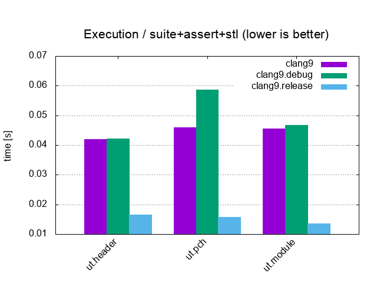

<!doctype html>
<html>
  <head>
    <meta charset="utf-8">
    <meta name="viewport" content="width=device-width, initial-scale=1.0, maximum-scale=1.0, user-scalable=no">

    <title>[Boost].UT - Unit Testing Framework</title>

    <link rel="stylesheet" href="reveal.js/css/reveal.css">
    <link rel="stylesheet" href="reveal.js/css/theme/league.css" id="theme">
    <link rel="stylesheet" href="extensions/plugin/line-numbers/line-numbers.css">
    <link rel="stylesheet" href="extensions/css/highlight-styles/zenburn.css">
    <link rel="stylesheet" href="extensions/css/custom.css">

    <script>
      var link = document.createElement( 'link' );
      link.rel = 'stylesheet';
      link.type = 'text/css';
      link.href = window.location.search.match( /print-pdf/gi ) ? 'reveal.js/css/print/pdf.css' : 'reveal.js/css/print/paper.css';
      document.getElementsByTagName( 'head' )[0].appendChild( link );

      function set_address(self, remote, local) {
        if (window.location.search.match("local")) {
          self.href = local;
        } else {
          self.href = remote;
        }
      }
    </script>

    <meta name="description" content="Dependency Injection - a 25-dollar term for a 5-cent concept">
    <meta name="author" content="Kris Jusiak">
    <meta name="apple-mobile-web-app-capable" content="yes">
    <meta name="apple-mobile-web-app-status-bar-style" content="black-translucent">
  </head>

  <body>
    <div class="reveal">
      <div class="slides">
          <section data-markdown=""
                   data-separator="^====+$"
                   data-separator-vertical="^----+$">
          <script type="text/template">
#### North Denver Metro C++ Meetup, Dec 2019

---

# [Boost].UT
## Unit Testing Framework

---

#### [kris@jusiak.net](mailto:kris@jusiak.net) | [@krisjusiak](https://twitter.com/krisjusiak) | [linkedin.com/in/kris-jusiak](https://www.linkedin.com/in/kris-jusiak)

----

#### Overview

* #### No dependencies (C++17\*/[C++20](https://en.cppreference.com/w/cpp/compiler_support#cpp2a), Tested Compilers: [GCC-9+, Clang-9.0+](https://travis-ci.org/boost-experimental/ut), [MSVC-2019+*](https://ci.appveyor.com/project/krzysztof-jusiak/ut))
<!-- .element: class="fragment" -->

* #### Single header/module ([boost/ut.hpp](https://github.com/boost-experimental/ut/blob/master/include/boost/ut.hpp))
<!-- .element: class="fragment" -->

* #### Macro-free (✔️)
<!-- .element: class="fragment" -->

* #### Features ([Assertions](https://github.com/boost-experimental/ut/tree/master/example/expect.cpp), [Suites](https://github.com/boost-experimental/ut/tree/master/example/suite.cpp), [Tests](https://github.com/boost-experimental/ut/tree/master/example/skip.cpp), [Sections](https://github.com/boost-experimental/ut/tree/master/example/section.cpp), [BDD](https://github.com/boost-experimental/ut/tree/master/example/BDD.cpp), [Matchers](https://github.com/boost-experimental/ut/tree/master/example/matcher.cpp), [Logging](https://github.com/boost-experimental/ut/tree/master/example/log.cpp), [...](https://github.com/boost-experimental/ut/tree/master/example))
<!-- .element: class="fragment" -->

---

* #### (\*) Limitations may apply
<!-- .element: class="fragment" -->

* #### [Boost].UT is not an official Boost library
<!-- .element: class="fragment" -->

----

#### Hello World - https://godbolt.org/z/Y43mXz

```cpp
// #include <boost/ut.hpp> // Single header
//  import   boost.ut;     // Single module (C++20)
```
<!-- .element: class="fragment" data-fragment-index="1" -->

```cpp
int main() {
```
<!-- .element: class="fragment" data-fragment-index="2" -->

```cpp
  "hello world"_test = [] {
    expect(true);
  };
```
<!-- .element: class="fragment" data-fragment-index="3" -->

```cpp
}
```
<!-- .element: class="fragment" data-fragment-index="2" -->

---

```sh
$CXX $CXXFLAGS hello_world.cpp -o hello_world
```
<!-- .element: class="fragment" data-fragment-index="4" -->

<pre><code>./hello_world</code> -> <font color="lime">All tests passed</font> (1 asserts in 1 tests)</pre>
<!-- .element: class="fragment" data-fragment-index="5" -->

----

#### Assertions - https://godbolt.org/z/jaFK8w

<pre><code class="line-numbers">expect(1_i == 2);                       // UDL syntax</code>  -> assertions.cpp:1:<font color="salmon">FAILED</font> [<font color="salmon">1 == 2</font>]</pre>
<!-- .element: class="fragment" data-fragment-index="1" -->

<pre><code class="line-numbers">expect(that % 1 == 2);                  // Matchers syntax</code>  -> assertions.cpp:1:<font color="salmon">FAILED</font> [<font color="salmon">1 == 2</font>]</pre> <!-- .element: class="fragment" data-fragment-index="2" -->

<pre><code class="line-numbers">expect(2 == 1_i) << "should equal?";</code>  -> assertions.cpp:1:<font color="salmon">FAILED</font> [<font color="salmon">2 == 1</font>] should equal?</pre>
<!-- .element: class="fragment" data-fragment-index="3" -->

<pre><code class="line-numbers"> std::vector v{1l, 2l, 3l};
!expect(4_ul == std::size(v));          // Fatal assertion
 expect(v[3] == 4_l);                   // Not executed
</code>  -> assertions.cpp:2:<font color="salmon">FAILED</font> [<font color="salmon">4 == 3</font>]</pre>
<!-- .element: class="fragment" data-fragment-index="4" -->

<pre><code class="line-numbers">expect(41.10_d == 42.101 and "a" == "b"sv);</code>  -> assertions.cpp:1:<font color="salmon">FAILED</font> [<font color="lime">42.1 == 42.101</font> <font color="salmon">and a == b</font>]</pre>
<!-- .element: class="fragment" data-fragment-index="5" -->

----

#### Sections - https://godbolt.org/z/y9m5vF

```cpp
"[vector]"_test = [] {
```
<!-- .element: class="fragment" data-fragment-index="1" -->

```cpp
  std::vector<int> v(5);
  !expect(5_ul == std::size(v));
```
<!-- .element: class="fragment" data-fragment-index="2" -->

```cpp
  should("resize bigger") = [=] {
    v.resize(10);
    expect(10_ul == std::size(v));
  };
```
<!-- .element: class="fragment" data-fragment-index="3" -->

```cpp
  !expect(5_ul == std::size(v));
```
<!-- .element: class="fragment" data-fragment-index="4" -->

```cpp
  should("resize smaller") = [=] {
    v.resize(0);
    expect(0_ul == std::size(v));
  };
```
<!-- .element: class="fragment" data-fragment-index="5" -->

```cpp
};
```
<!-- .element: class="fragment" data-fragment-index="1" -->

----

#### Behavior Driven Development (BDD) - https://godbolt.org/z/ps9_EQ

```cpp
"[vector]"_test = [] {
```
<!-- .element: class="fragment" data-fragment-index="1" -->

```cpp
  given("I have a vector") = [] {
    std::vector<int> v(5);
    !expect(5_ul == std::size(v));
```
<!-- .element: class="fragment" data-fragment-index="2" -->

```cpp
    when("I resize bigger") = [=] {
      v.resize(10);
```
<!-- .element: class="fragment" data-fragment-index="3" -->

```cpp
      then("The size should increase") = [=] {
        expect(10_ul == std::size(v));
      };
```
<!-- .element: class="fragment" data-fragment-index="4" -->

```cpp
    };
```
<!-- .element: class="fragment" data-fragment-index="3" -->

```cpp
  };
```
<!-- .element: class="fragment" data-fragment-index="2" -->

```cpp
};
```
<!-- .element: class="fragment" data-fragment-index="1" -->

----

#### Parameterized - https://godbolt.org/z/6FHtpq

```cpp
"args"_test = [](const auto& arg) {
  expect(arg > 0_i) << "all values greater than 0";
}
```
<!-- .element: class="fragment" data-fragment-index="1" -->

<pre><code>| std::vector{1, 2, 3};</code> -> <font color="lime">All tests passed</font> (3 asserts in 3 tests)</pre>
<!-- .element: class="fragment" data-fragment-index="2" -->

---

```cpp
"args and types"_test =
  []<class TArg>(const TArg& arg) {
    expect(std::is_integral_v<TArg>);
    expect(type<TArg> == type<int> or type<TArg> == type<bool>);
  }
```
<!-- .element: class="fragment" data-fragment-index="3" -->

<pre><code>| std::tuple{true, 42};</code> -> <font color="lime">All tests passed</font> (4 asserts in 2 tests)</pre>
<!-- .element: class="fragment" data-fragment-index="4" -->

----

#### Suites - https://godbolt.org/z/F3xJcJ

```cpp
suite errors = [] {
```
<!-- .element: class="fragment" data-fragment-index="1" -->

```cpp
  "exception"_test = [] { 
    expect(throws([] { throw 0; })) << "throws any exception";
  };

  "failure"_test = [] {
    expect(aborts([] { assert(false); }));
  };
```
<!-- .element: class="fragment" data-fragment-index="2" -->

```cpp
};
```
<!-- .element: class="fragment" data-fragment-index="1" -->

---

<pre><code>int main() { }</code> -> <font color="lime">All tests passed</font> (2 asserts in 2 tests)</pre>
<!-- .element: class="fragment" data-fragment-index="3" -->

----

#### Benchmarks - https://github.com/cpp-testing/ut-benchmark

<a href="images/Compilation_suite+assert+stl.png"></a>
<a href="images/BinarySize_suite+assert+stl.png"></a>
<a href="images/Execution_suite+assert+stl.png"></a>

##### Suite+Assert+STL / 10'000 tests, 20'000 asserts, 100 cpp files

----

#### Benchmarks - C++20 Modules - https://github.com/cpp-testing/ut-benchmark

<a href="images/ut_Compilation_suite+assert+stl.png"></a>
<a href="images/ut_BinarySize_suite+assert+stl.png"></a>
<a href="images/ut_Execution_suite+assert+stl.png"></a>

##### Suite+Assert+STL / 10'000 tests, 20'000 asserts, 100 cpp files

----

#### [Boost].UT - https://github.com/boost-experimental/ut

---

### "If you liked it then you "should have put a"_test on it", Beyonce rule

---

#### [kris@jusiak.net](mailto:kris@jusiak.net) | [@krisjusiak](https://twitter.com/krisjusiak) | [linkedin.com/in/kris-jusiak](https://www.linkedin.com/in/kris-jusiak)
          </script>
        </section>

      </div>
    </div>

    <script src="reveal.js/lib/js/head.min.js"></script>
    <script src="reveal.js/js/reveal.js"></script>

    <script>

      // Full list of configuration options available at:
      // https://github.com/hakimel/reveal.js#configuration
      Reveal.initialize({

        // Display controls in the bottom right corner
        controls: true,

        // Display a presentation progress bar
        progress: false,

        // Display the page number of the current slide
        slideNumber: true,

        // Push each slide change to the browser history
        history: true,

        // Enable keyboard shortcuts for navigation
        keyboard: true,

        // Enable the slide overview mode
        overview: false,

        // Vertical centering of slides
        center: true,

        // Enables touch navigation on devices with touch input
        touch: true,

        // Loop the presentation
        loop: false,

        // Change the presentation direction to be RTL
        rtl: false,

        // Turns fragments on and off globally
        fragments: true,

        // Flags if the presentation is running in an embedded mode,
        // i.e. contained within a limited portion of the screen
        embedded: false,

        // Flags if we should show a help overlay when the questionmark
        // key is pressed
        help: true,

        // Flags if speaker notes should be visible to all viewers
        showNotes: false,

        // Number of milliseconds between automatically proceeding to the
        // next slide, disabled when set to 0, this value can be overwritten
        // by using a data-autoslide attribute on your slides
        autoSlide: 0,

        // Stop auto-sliding after user input
        autoSlideStoppable: true,

        // Enable slide navigation via mouse wheel
        mouseWheel: false,

        // Hides the address bar on mobile devices
        hideAddressBar: true,

        // Opens links in an iframe preview overlay
        previewLinks: false,

        // Transition style
        transition: 'convex', // none/fade/slide/convex/concave/zoom

        // Transition speed
        transitionSpeed: 'default', // default/fast/slow

        // Transition style for full page slide backgrounds
        backgroundTransition: 'default', // none/fade/slide/convex/concave/zoom

        // Number of slides away from the current that are visible
        viewDistance: 3,

        // Parallax background image
        parallaxBackgroundImage: '', // e.g. "'https://s3.amazonaws.com/hakim-static/reveal-js/reveal-parallax-1.jpg'"

        // Parallax background size
        parallaxBackgroundSize: '', // CSS syntax, e.g. "2100px 900px"

        // Number of pixels to move the parallax background per slide
        // - Calculated automatically unless specified
        // - Set to 0 to disable movement along an axis
        parallaxBackgroundHorizontal: null,
        parallaxBackgroundVertical: null,

        // Optional reveal.js plugins
        dependencies: [
          { src: 'reveal.js/lib/js/classList.js', condition: function() { return !document.body.classList; } },
          { src: 'reveal.js/plugin/markdown/marked.js', condition: function() { return !!document.querySelector( '[data-markdown]' ); } },
          { src: 'reveal.js/plugin/markdown/markdown.js', condition: function() { return !!document.querySelector( '[data-markdown]' ); } },
          { src: 'reveal.js/plugin/highlight/highlight.js', async: true, callback: function() { hljs.initHighlightingOnLoad(); } },
          { src: 'reveal.js/plugin/zoom-js/zoom.js', async: true },
          { src: 'reveal.js/plugin/notes/notes.js', async: true },
          { src: 'extensions/plugin/line-numbers/line-numbers.js' }
        ]
      });

      <!--window.addEventListener("mousedown", handleClick, false);-->
      <!--window.addEventListener("contextmenu", function(e) { e.preventDefault(); }, false);-->

      <!--function handleClick(e) {-->
        <!--if (1 >= outerHeight - innerHeight) {-->
          <!--document.querySelector( '.reveal' ).style.cursor = 'none';-->
        <!--} else {-->
          <!--document.querySelector( '.reveal' ).style.cursor = '';-->
        <!--}-->

        <!--e.preventDefault();-->
        <!--if(e.button === 0) Reveal.next();-->
        <!--if(e.button === 2) Reveal.prev();-->
      <!--}-->
    </script>

  </body>
</html>
